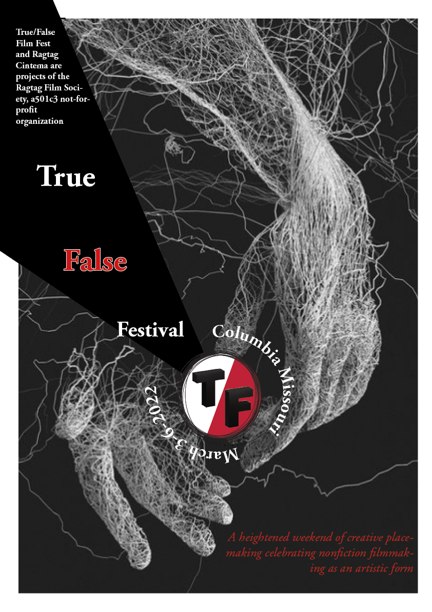
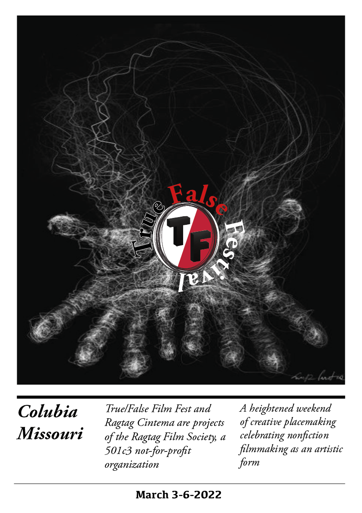

CARP TASK
Main Poster
Look at this poster. What are attracted you the most? Many of my classmates and friends do not hesitate to reply that this is hands. This poster did not cost me a lot of time. I have done it within two days. The most challenging thing is to find the picture. Finally, I got it. However, I have no experience with design, especially with the inDesign tool, I met a lot of difficulties in doing with images. You can see ,obviously, the quality of the picture is not good, terrible, honestly. I put the logo in the middle of your hands on this poster. It looks like you are holding the logo and the text moving around the logo. I made a little bit of colour contrast between white, black and red. These colours are mainly of colour's logo, so I have used to repeat colour for the text. I am also aligning the text from the left corner to the right corner. I feel it is not a perfect poster because I can see many mistakes in this work. However, Mary(my teacher) told me that she likes it.
Poster 2

This is my favourite poster. It took me four hours to finish by using Adobe Illustrator. I felt it is quite easy to design text with Illustrator, and it is so easy to find out videos on youtube to follow. In this picture, I was doing with colour a lot. I focus on the gradient between white, red, orange and yellow. The sunset inspired me, and I really like the colour of this picture. In this poster, the repetition of the colour palette is the most interesting for viewers. The repetition element here also has in the ellipse shapes. I created a lot of ellipses and made a high contrast between small and big sizes. The colour of the text also shows the contrast as well. In terms of alignment, all the text is placed in the poster's centre. Before, I made the title of this poster by using a 3D effect. However, after receiving feedback from Mary, I changed it to be readable. The title is very standing out, and the content of the festival is located below next to the logo making the connection to each other. After designing on Illustrator, I linked it to InDesign. This is easier than doing text and colour directly on the Indesign.
Poster 3
This poster is designed following minimal style. I quite like it. It looks straightforward, but it is also fascinating. It sends a special message to readers. Looking at the hand holding and raising the logo and, it is given for everyone as the meaning of the True/ False festival is non-profit. The logo is placed on the hand and the title goes around it. It is the final poster so I felt I get familiar with InDesign. Everything is easier than before. The quality of the picture is better. There are not many things to talk about it; however; the main tone is white and black can bring viewers to simple things after the dynamic of poster 2.
Original poster

The original poster with content and logo. This is material for my designing.
UX TASK
Scope and strategy website
The strategy of a website is mainly based on two items: website objectives and user needs. The first step to creating a website is defining its website's objective. There are many objectives for my website. First of all, it is a place to put all my works of the graphic and design studio module on, so I would like to get a good mark on this subject. Secondly, this website is a marketing tool for me. I mean, In here, I have planned to the public all my designs as a public portfolio that will send to my teachers and my future employers to internship, interview, and get a well-paid job. Therefore, my goal is to meet users' goals to evaluate my ability and skills for their purposes. Furthermore, it is my first website, so I have used it to practice to have a deeper understanding of this module. Thanks to this, I can get a sense of satisfaction and enjoy this progress. Finally, it reflects my process in class. Part two of the strategic plan is to identify who are users and their needs. The first class of my users that I would like to mention is my teacher. They are Mary Jackson( lecturer ) and Tom( tutor), and my program leader. Moreover, I want to send this web to my classmates because I think they will give me a lot of feedback to help me improve my skills and correct my mistakes. I also want to introduce it to my family and my friends. Importantly, this website will be sent to my potential employers as a public portfolio when I interview or apply for a job in the future. In terms of website scope, I will break it into two parts: functionality and content. So what I want my website to do. It includes webpages, links to other pages, easy navigation, a usable interface, flexible items and buttons. I want my website to present all information and choices. Now I will talk about the content of my website. It has specific content like my information, assignments of UX, design, typography and coding task and reflective report. Moreover, I would put other information related to my contacts and other projects.
Flowchart
In terms of website scope, I will break it into two parts: functionality and content. So what I want my website to do. It includes webpages, links to other pages, easy navigation, a usable interface, flexible items and buttons. I want my website to present all information and choices. Now I will talk about the content of my website. It has specific content like my information, assignments of UX, design, typography and coding task and reflective report. Moreover, I would put other information related to my contacts and other projects.
TYPE TASK
Axial

The first thing to do an axial typography is drawing a line. After thet the body text is developed in the left part of the line. This system helps organising the text really well in the same degree. The background of this poster is red. It is high contrast with the white and back texts.
Radial

All the body text and lines are placed radioactively a centre.The centre is a white ellipse and it is bodered with black. The background is yellow like a sun stuitable to this design. Because it looks like the radiation of the sun. so it make the poster like a sun.
Dilatational
 (1)-01.png)
This typographic system took me a lot of time. All text is set on the arcs.I had used the type on the path tool to make it. Also, two colors are used in this poster is black and white creating a distinct hierarchy in the way the text is read and understool.
Grids

reflection 2-3 sentences
Random

reflection 2-3 sentences
Transitional
reflection 2-3 sentences
Bilateral

reflection 2-3 sentences
Modular

reflection 2-3 sentences
Coding TASK
I put all the klinl
Worksheet 1
uuuyfgnvhbggn